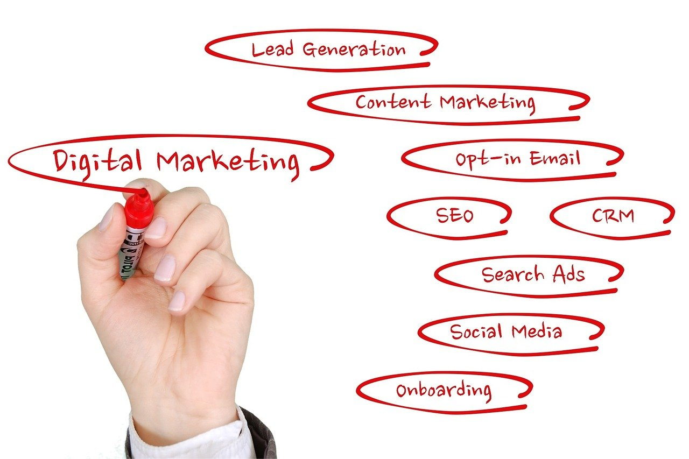

Importance of Business presence Online
Whatever business you are running, you need to advertise your business to create awareness of your brand, product, services, and ideas. Advertising your business means promoting your products or services to potential consumers. That is introducing these elements to your audiences/customers, making them aware of the importance of your brand or business product.
o before you achieve your goal you need to go through the steps that a successful brand needs. You have to be Social to allow your business to showcase your products or services such as uploading pictures of your products, making tutorial videos of how to use your product or services, and even introducing your team of staff that are part of your company.
As we know in this modern era people are more dependent on social media. So nothing can be more useful than marketing your business through these social platforms. The more you grow your business presence online the more you’ll get from it! From achieving audience response you are creating awareness. And through Digital Marketing you can make everything possible.

Importance of Digital Marketer for your Business
So, you are owning a business/ company. You must have an online presence for your brand. But you don’t know how to manage your online business properly. A Digital Marketer is the solution for you to run your business efficiently and effectively.
While marketing your business digitally, your company website needs to be up to performance, like whenever an individual is looking for a product/service on search engines they’ll get results of what you are offering from your website. But you know there are thousands of businesses who have their online presence offering what you are. Then how can you show your best to the people in the first place? There you need Digital Marketers who will show your best leaving all your competitors behind towards the right audience by ranking your website in the top results.
As we know the internet has brought a whole new market. Digital marketing became the norm for a successful business, and if you are not involved in this, your business is missing the chance to grow in the future.
What Digital Marketers do
To make your business online, to make it reach every audience, educating and spreading awareness among people, making your audiences as a customer you will need a Digital Marketer who will be taking care of these through Online Marketing.
Let’s take a look at the most demanding Marketing strategy of 2021:
- Search Engine Optimization (SEO)
- Social Media Marketing (SMM).
- Content Marketing.
- Affiliate Marketing.
- E-mail Marketing
- Pay per Click (PPC)
- Native Advertising
When you decide to build your business profile through online marketing, the first and foremost approach would be reaching your targeted audience.
For this, the best way is using social media where people are most active. Either it’s an online business/brand or a physical shop/company or anything like this, people will be more tending to those products which are viral on social media platforms or available on google when they want to buy their desire product or service.
So, when it comes to social media platforms, you’ll need a Digital marketer who will help you to advertise what your Business Goal is, what services/products you will provide by creating unique and eye-catching content and ads, also creating useful and entertaining blogs, articles based on your product, that will help you to make your customer convinced to get the best thing from you.
After creating content your marketers will make it easier for you to interact with your audience/customer and get their desired service or product.
Also, most importantly, you have to always keep in mind what your audience desires, what they need, what they would love to see, and also what they expect from you. In order to achieve this your websites and contents need to be optimized so that people will find it easier to get something whenever they go to the online market or their browser and search for something they get to see your product in the first place. Your digital Marketers will implement the best strategies to do this job for you by optimizing your website.
Not only these, you will also have to analyze your overall online marketing, a consistent improvement if you want to make it grow successfully. Your Digital marketer will take care of your A-Z Online Activity, will keep checking your business progress and manage it, give you a monthly analysis report and figure out where to work on more, what will need to be improved or corrected which plays a vital role in your Online Marketing.
As you can see Digital marketing has been crucial in the survival of today’s business world. Your business needs to be more exposed to get a bigger audience if you want to get a healthy growth of your business. You’ll get obstacles, may face unexpected experiences at first, but with proper Marketing Strategies you’ll get the best out of it!